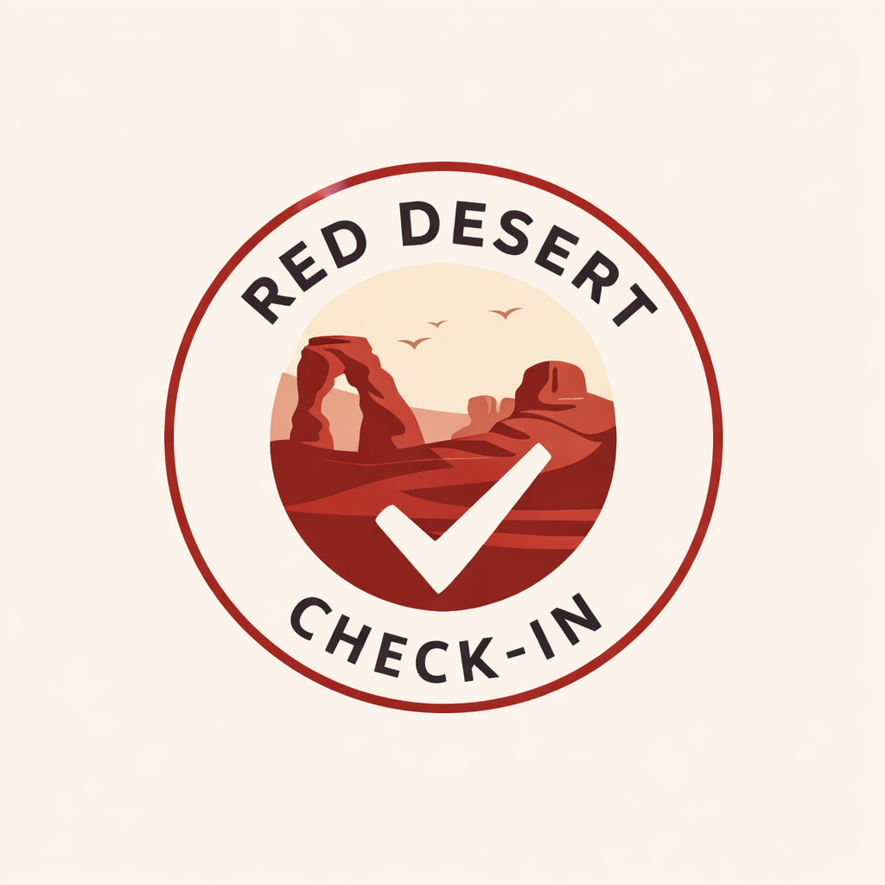
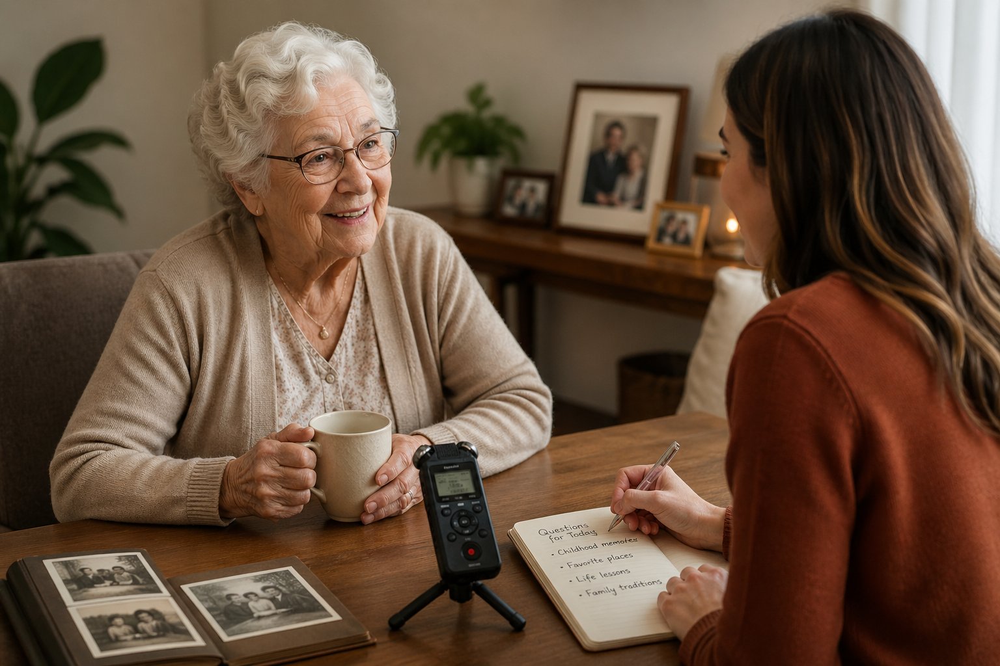

We gather questions
Family can submit questions they have always wanted answered, from simple memories to deeper reflections.

EmailLegacy Story Sessions
A guided storytelling service that helps your loved one share memories, life lessons, family history, letters, messages, and stories your family can keep for generations.

Why this matters
There are things families want to know, but do not always ask in time. Childhood stories. Family traditions. How they met their spouse. What they survived. What they are proud of. What they regret. What advice they want to leave behind.
Legacy Story Sessions create a calm space for your loved one to reminisce, talk about their life, answer family questions, and leave something meaningful behind.
What it is
This is not therapy, medical care, or a formal biography. It is a gentle way to help someone talk through their life and preserve what matters before those stories fade.
Family can submit questions they have always wanted answered, from simple memories to deeper reflections.
Your loved one is given time to talk, remember, laugh, cry, reflect, or say what they want their family to know.
Stories, voice notes, memories, and messages are organized into something your family can keep and return to.
How families use it
Some families want childhood stories. Some want answers to questions. Some want voice recordings. Some want letters, messages, or final goodbyes. The sessions are shaped around what your family wants preserved.
Capture memories about childhood, parents, grandparents, siblings, marriage, work, military service, traditions, hard seasons, and meaningful life events.
Children, grandchildren, siblings, or close loved ones can submit questions so the conversation includes what the family truly wants to know.
Written stories matter, but hearing their voice, laugh, pauses, and way of speaking can become one of the most meaningful parts.
Sessions can include messages for children, grandchildren, a spouse, future birthdays, weddings, graduations, or milestones.
Being asked about their life can help your loved one feel seen, valued, and remembered while they are still here to share it.
When the timing is right, sessions can gently help someone share love, forgiveness, advice, gratitude, or final words.
The keepsake
The final keepsake can include written stories, selected quotes, family questions, voice notes, photos, captions, and meaningful messages.
It becomes more than a file. It becomes a piece of their life your family can keep, share, and pass down.
Pricing
Full Legacy Story Sessions begin with a 6-month commitment so there is time to build trust, collect stories, and create something meaningful.
$189/month
Most Complete
$249/month
Initial term: 6 months
After that: families may continue month-to-month
Best for: preserving stories, voice, messages, and family history
For Check-In Clients
If your loved one is already receiving Red Desert Check-In visits, light memory capture can be added into those visits.
This is a smaller version of Legacy Story Sessions. It is for families who want stories and memories captured gradually during regular check-ins.
+$20 per visit
Examples:
1 check-in/month → +$20/month
2 check-ins/month → +$40/month
4 check-ins/month → +$80/month
For deeper storytelling, dedicated time, voice capture, and a full keepsake, the full Legacy Story Sessions are the better fit.
We can talk through what your family wants captured and whether full Legacy Story Sessions or the Check-In add-on makes the most sense.